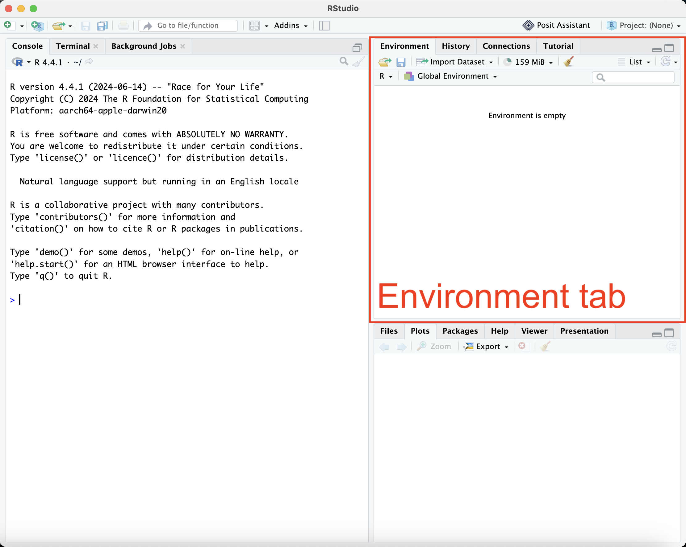

5 Managing your R Environment
5.1 The Global Environment
The global environment is your workspace. It includes all the objects you’ve created, which are listed in the “Environment” tab.

Every time you call a function, a new environment is created, with its own set of objects. This environment lasts until the function finishes running.
We’ll see more about this in Lecture 4.
5.1.1 What’s in the workspace?
R has functions for learning about the collection of objects in your workspace. Some of this is built in to RStudio.
x <- rnorm(5)
y <- c(5L, 2L, 7L)
z <- list(a = 3, b = c("sam", "yang"))
ls() # search the user workspace (global environment)
#> [1] "x" "y" "z"
rm(x) # delete a variable5.2 Packages (R’s killer app)
Where do functions come from?
- Base R: very basic. mean, sd, lm ….
- Packages: “off-the-shelf” tools for you to apply, made by you or another team
- Your own code, in the global environment! See Lecture 4!
Let’s check out the packages on CRAN
Essentially any well-established and many not-so-established statistical methods and other functionality is available in a package.
If you want to sound like an R expert, make sure to call them packages and not libraries. A library is the location in the directory structure where the packages are installed/stored.
5.2.0.1 Using packages
Two steps:
- Install the package on your machine
- Load the package
To install a package, in RStudio, you can use Packages->Install Packages.
From the command line, you generally will just do:
install.packages("dplyr")
?install.packages
library(dplyr)That should work without specifying the repository from which to download the package (though sometimes you will be given a menu of repositories from which to select) but sometimes you’ll get errors indicating a package is not available for your version of R if you don’t include an explicit repository.
If you’re on a network and are not the administrator of the machine, you may need to explicitly tell R to install it in a directory you are able to write in:
install.packages("dplyr", lib = file.path("~", "R"))Now would be a good point to install the various packages we need for the workshop, which can be done easily with the following command:
install.packages(
c(
"datasets", # useful for example problems
"tidyverse", # all sorts of data science tools!
"ggplot2", # plotting!
"haven", # reading/writing specialized data types
"scales", # customized graph axes
"gridExtra", # combine multiple plots into one
"reprex", # reproducible examples
"xlsx", # working with excel
"knitr", # working with R Markdown notebooks
"PKPDsim" # simulate concentration-time curves given PK parameters
)
)Note that packages often are dependent on other packages so these dependencies may need to be installed first. This should happen automatically, but sometimes you might get prompted that there was a problem installing a package because some dependency was missing.
You can also install directly from a package zip/tarball rather than from CRAN by giving a filename instead of a package name.
5.2.0.2 General information about a package
You can use syntax as follows to get a list of the objects in a package and a brief description: library(help = packageName).
library(help = "datasets")On CRAN there often vignettes that are an overview and describe usage of a package if you click on a specific package. The reference manual is just a single document with the help files for all of the objects/functions in a package, so may be helpful but often it’s hard to get the big picture view from that.
vignette("base", package = "dplyr")More on dplyr in the next lecture!
5.3 Packages: The Technical Details
Environment: a set of objects (funcions, data, …) available for you to use.
Package: a set of objects (usually functions, but also other objects) available for you to use.
What’s the difference?
5.3.0.1 The search path
If you use an object, R will search in this order:
- The function environment (if called from within a function).
- The global environment.
- The search path.
Loading a package adds it to your search path.
The order in which you load packages changes the search path priority!
To see the packages that are loaded and the order in which packages are searched for functions/objects: search().
# 1. Identify packages currently loaded:
search()
#> [1] ".GlobalEnv" "package:stats" "package:graphics"
#> [4] "package:grDevices" "package:utils" "package:datasets"
#> [7] "package:methods" "Autoloads" "package:base"
original_search <- search()
# 2. Load a new package:
library(lubridate) # a tidyverse package
lubridate::now()
#> [1] "2026-08-21 18:21:53 UTC"
# 3. How did our search path change?
search_after_library_load <- search()
setdiff(search_after_library_load, original_search)
#> [1] "package:lubridate"You can “reset” your search path to your default by “Refreshing” your R Session.
search_after_refresh <- search()
setdiff(search_after_library_load, search_after_refresh)
#> character(0)Tip: Start every analysis and homework problem with a fresh session and a clean environment! Out-of-date objects and package dependencies you forgot to declare are common sources of bugs or reproducibility issues.
(Reproducibility: Other people should be able to run your code/analysis and get the same results.)
How does R know where to look for packages when you call library?
# Note: functions and variables that start with "." are usually for "advanced"
# users.
.libPaths()
#> [1] "/home/runner/work/_temp/Library" "/opt/R/4.6.1/lib/R/site-library"
#> [3] "/opt/R/4.6.1/lib/R/library"5.3.0.2 Package namespaces
A package namespace contains all the objects that package makes available for you to use.
Namespaces are way to keep all the names for objects in a package together in a coherent way and allow R to look for objects in a principled way.
A few useful things to know:
library(dplyr)
# You can reference functions within a package using two colons:
stats::t.test(rnorm(15, 6), rnorm(20, 7))
#>
#> Welch Two Sample t-test
#>
#> data: rnorm(15, 6) and rnorm(20, 7)
#> t = -1.9404, df = 21.378, p-value = 0.06563
#> alternative hypothesis: true difference in means is not equal to 0
#> 95 percent confidence interval:
#> -1.86081042 0.06343092
#> sample estimates:
#> mean of x mean of y
#> 6.141939 7.040629
# This is useful when two functions have the same name:
?filter
#> Help on topic 'filter' was found in the following packages:
#>
#> Package Library
#> dplyr /home/runner/work/_temp/Library
#> stats /opt/R/4.6.1/lib/R/library
#>
#>
#> Using the first match ...
?dplyr::filter
?stats::filter5.3.0.3 Creating your own R package
R is do-it-yourself - you can write your own package! At its most basic this is just some R scripts that are packaged together in a convenient format. And if giving it to someone else, it’s best to have some documentation in the form of function help files.
Why make a package?
- It’s an easy way to share code with collaborators
- It’s a good way to create self-contained code for code you commonly use yourself
- It’s how you can share your code and methods with the outside world
- It helps make your work reproducible
- It forces you to be more formal about your coding, which will improve your code
See the devtools package and usethis package for some useful tools to help you create a package. And there are lots of tips/tutorials online, in particular Hadley Wickham’s R packages book.
Here are a few packages the authors of these lectures have made: - https://github.com/insightRX/clinPK: clinical calculations - https://github.com/insightRX/PKPDsim: simulate PK/PD curves - https://github.com/insightRX/PKPDposterior: Full Bayes estimation for MIPD
5.3.0.4 When should I create my own package?
- If you use the same code more than once: make a function (Lecture 4)
- If you use the same function in more than one project or assignment, make a package.
- You don’t need to be an expert to make a package!
5.4 Breakout 1
- Make sure you are able to install packages from CRAN. E.g., try to install praise. What does the code below do?
5.5 The working directory
To read and write from R, you need to have a firm grasp of where in the computer’s filesystem you are reading and writing from.
R Notebooks (like this one) always run from the file location.
The Console working directory can be configured, either from the console, or through the UI.
getwd() # what directory will R look in?
# Linux/Mac specific
# setwd("~/Documents") # change the working directory
# setwd("/Users/jasminehughes/Documents") # absolute path
# getwd()
# Windows - use either \\ or / to indicate directories
# setwd("C:\\Users\\Your_username\\Desktop\\R_for_pharmacometricians")
# setwd("..\\R_for_pharmacometricians")
# use `file.path` to be platform-agnostic.Many errors and much confusion result from you and R not being on the same page in terms of where in the directory structure you are.
list.files()
#> [1] "_book" "_extensions"
#> [3] "_quarto.yml" "appendices"
#> [5] "chapters" "course_structure.html"
#> [7] "course_structure.qmd" "data"
#> [9] "example_project" "images"
#> [11] "index.html" "index.qmd"
#> [13] "installing_r_rstudio.html" "installing_r_rstudio.qmd"
#> [15] "lectures" "notes"
#> [17] "phc506-materials.zip" "PHC506.Rproj"
#> [19] "practice_problems" "r_cheatsheet"
#> [21] "README.md" "scripts"
#> [23] "setup" "site_libs"
#> [25] "solutions"5.6 RStudio projects
You’ve now seen how much depends on you and R agreeing on the working directory. Constantly calling setwd() with a long, absolute path like setwd("/Users/jasminehughes/Documents/PHC506") is fragile: that path only exists on your computer, so the code breaks the moment you—or a classmate, or future you—run it somewhere else.
RStudio projects solve this. A project is just a directory that holds everything together for one piece of work—your scripts, your data, and your outputs—using a small .Rproj file that marks the directory as a project.
When you open a project (by double-clicking its .Rproj file, with File > Open Project… in RStudio, or with the project selection drop-down in the top-right corner of RStudio):
- RStudio sets the working directory to the project folder automatically, so you never need to call
setwd(). - You can refer to files with paths relative to the project, like
file.path("data", "theophylline.csv")—exactly what we’ve been doing. Because the path is relative, the same code runs on any computer that has the project folder. - Everything for the analysis lives in one self-contained place, which makes your work easy to share and to pick back up later.
Tip
The materials for this course are already an RStudio project. If you download the course files (the download button in the website sidebar) and open PHC506.Rproj, RStudio sets the working directory for you, and every file.path("data", ...) in these lectures will just work.
5.6.1 Creating a project
To make your own: File > New Project…, then choose New Directory to start fresh, or Existing Directory to turn a folder you already have into a project. Give each analysis, course, or paper its own project to stay organized.
5.6.2 Projects and reproducibility
Recall from the Global Environment that R can save your workspace—all of your objects—between sessions. For reproducible work it’s actually better not to rely on that: you want to be able to recreate every object by re-running your code, not by restoring a hidden .RData file. In RStudio’s Tools > Global Options > General we recommend you:
- uncheck “Restore .RData into workspace at startup”, and
- set “Save workspace to .RData on exit” to Never.
That way every session starts from a clean slate. If your script produces the right result starting from an empty environment, you know it’s truly reproducible. If you currently have an .RData at the root of your project, you can delete it (check the Files tab!).
5.7 Reading text files into R
The workhorse for reading a data file into a data frame is read.table(), which allows any separator (CSV, tab-delimited, etc.). read.csv() is a special case of read.table() for CSV files (the most common type of data file).
Earlier we used read.csv() to load pharmacokinetic data for theophylline.
theophylline <- read.csv(file.path("data", "theophylline.csv"))
theophylline
#> # A tibble: 132 × 5
#> Subject Wt Dose Time conc
#> <int> <dbl> <dbl> <dbl> <dbl>
#> 1 1 79.6 4.02 0 0.74
#> 2 1 79.6 4.02 0.25 2.84
#> 3 1 79.6 4.02 0.57 6.57
#> 4 1 79.6 4.02 1.12 10.5
#> 5 1 79.6 4.02 2.02 9.66
#> 6 1 79.6 4.02 3.82 8.58
#> 7 1 79.6 4.02 5.1 8.36
#> 8 1 79.6 4.02 7.03 7.47
#> 9 1 79.6 4.02 9.05 6.89
#> 10 1 79.6 4.02 12.1 5.94
#> # ℹ 122 more rowsIt’s good to first look at your data in plain text format outside of R and then to check it after you’ve read it into R. You can also click on a data file in the Files tab and choose Import Dataset… to interactively adjust how the data is read. This can be helpful when the data was stored in a non-standard way.
Careful about handling genomic information in excel!
5.8 Reading Excel sheets into R
Excel is widely used, and so data often comes in Excel spreadsheets. There are a number of packages for reading Excel’s proprietary formats. I like readxl.
require(readxl)
aq <- readxl::read_excel(file.path("data", "airquality.xlsx"))
aq
#> # A tibble: 153 × 6
#> Ozone Solar.R Wind Temp Month Day
#> <dbl> <dbl> <dbl> <dbl> <dbl> <dbl>
#> 1 41 190 7.4 67 5 1
#> 2 36 118 8 72 5 2
#> 3 12 149 12.6 74 5 3
#> 4 18 313 11.5 62 5 4
#> 5 NA NA 14.3 56 5 5
#> 6 28 NA 14.9 66 5 6
#> 7 23 299 8.6 65 5 7
#> 8 19 99 13.8 59 5 8
#> 9 8 19 20.1 61 5 9
#> 10 NA 194 8.6 69 5 10
#> # ℹ 143 more rows5.9 Reading “foreign” format data
Other statistical software tools often produce specialized file types. The package haven works well for these:
- SAS: read_sas() reads .sas7bdat + .sas7bcat files
- SPSS: read_sav() reads .sav files; read_por() reads .por files.
- Stata: read_dta() reads .dta files.
library(haven)
?havenR can also read in (and write out) Excel files, netCDF files, HDF5 files, etc., in many cases through add-on packages from CRAN.
Tip: Best practices for data-sharing: avoid using proprietary formats. TXT and CSV files are much easier to read across platforms and programming languages.
5.10 Writing data out from R
Here you have a number of options.
- You can write out R objects to an R Data file using
saveRDS(). - You can use
write.csv()andwrite.table()to write data frames to flat text files with delimiters such as comma and tab. - You can use
write()to write out matrices in a simple flat text format. - You can use
cat()to write to a file, while controlling the formatting. - You can write out in the various file formats mentioned above
5.11 Breakout 2
- Figure out what your current working directory is.
- Write the theophylline data frame to your downloads folder. Open it in excel or a similar application. Does it look like you expected?
- (Optional) If you have a .csv file or a Microsoft Excel file with data that you’ve used for an unrelated project or assignment, try open it now, just to see if you can!